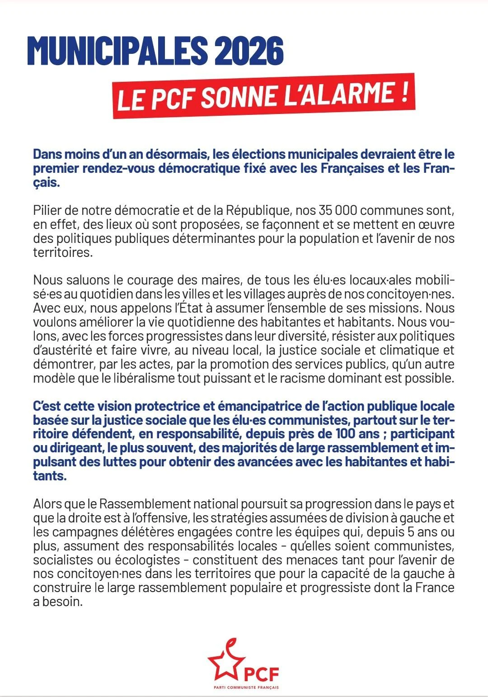
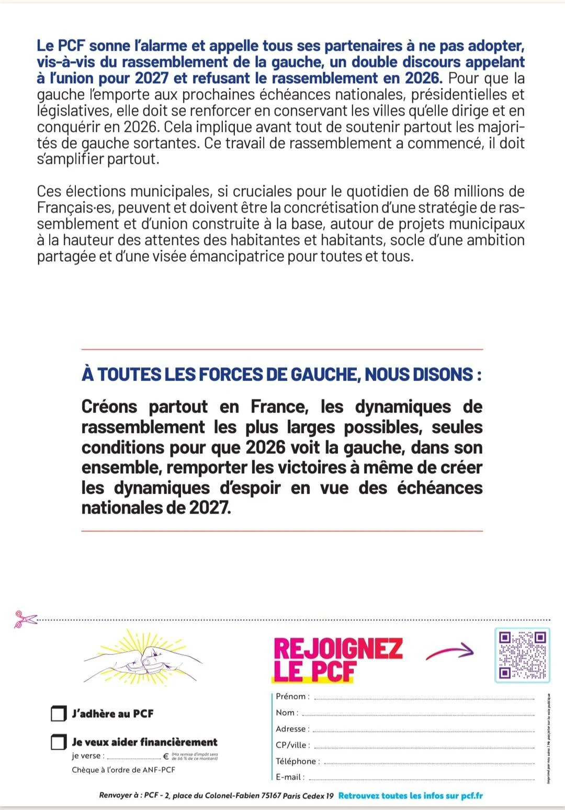

Tract
« Municipales 2026. Le PCF sonne l’alarme ! »
Date indiquée par Facebook · 7 juillet 2025
Repères éditoriaux
Le tract du PCF défend le rôle des communes dans la vie quotidienne, la promotion des services publics et le rassemblement des forces de gauche pour les municipales de 2026. Nous en avons relayé les deux faces.


Sources
Archive rouge · document diffusé sur Facebook · AR-0002-FB-01075
À lire aussi · Face au budget d’austérité, le PCF propose un pacte d’avenir